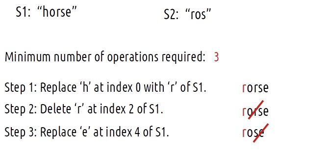
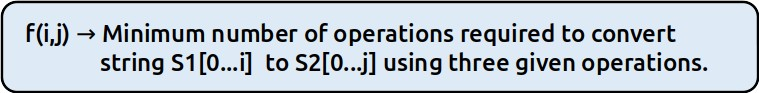
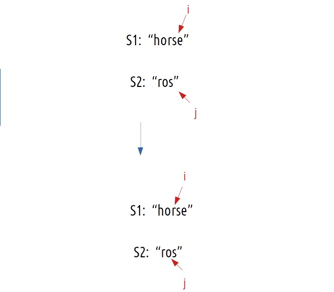
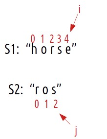
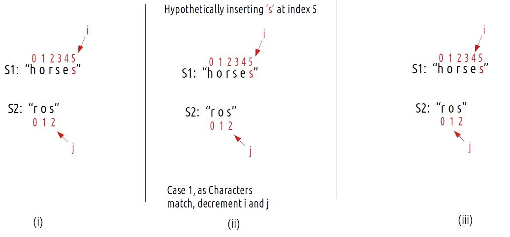
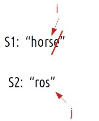
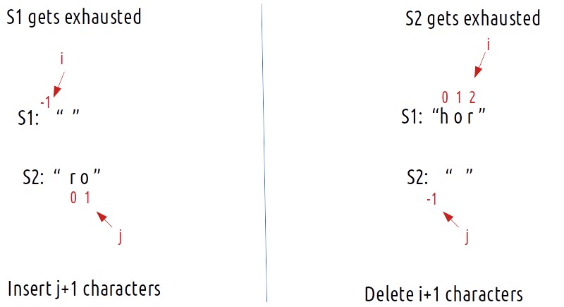
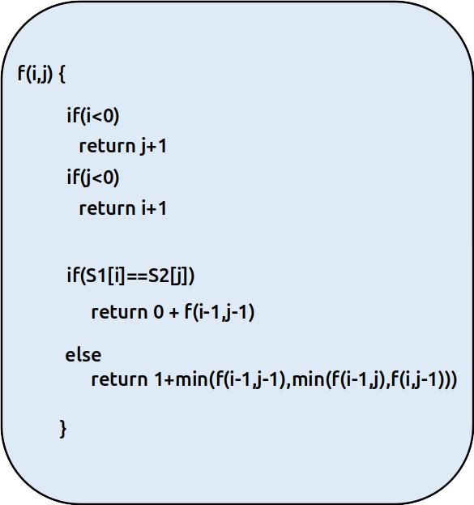

Problem Statement: Edit Distance
We are given two strings ‘S1’ and ‘S2’. We need to convert S1 to S2. The following three operations are allowed:
- Deletion of a character.
- Replacement of a character with another one.
- Insertion of a character.
We have to return the minimum number of operations required to convert S1 to S2 as our answer.
Examples
Example: 

Disclaimer: Don’t jump directly to the solution, try it out yourself first.
Memoization Approach
Algorithm / Intuition
Intuition:
For every index of string S1, we have three options to match that index with string S2, i.e replace the character, remove the character or insert some character at that index. Therefore, we can think in terms of string matching path as we have done already in previous questions.
As there is no uniformity in data, there is no other way to find out than to try out all possible ways. To do so we will need to use recursion.
Steps to form the recursive solution:
We will first form the recursive solution by the three points mentioned in the Dynamic Programming Introduction.
Step 1: Express the problem in terms of indexes.
We are given two strings. We can represent them with the help of two indexes i and j. Initially, i=n-1 and j=m-1, where n and m are lengths of strings S1 and S2. Initially, we will call f(n-1,m-1), which means the minimum number of operations required to convert string S1[0…n-1] to string S2[0…m-1].
We can generalize this as follows:

Step 2: Try out all possible choices at a given index.
Now, i and j represent two characters from strings S1 and S2 respectively. There are only two options that make sense: either the characters represented by i and j match or they don’t.
(i) When the characters match
if(S1[i]==S2[j]),
If this is true, now as the characters at i and j match, we would not want to do any operations to make them match, so we will just decrement both i and j by 1 and recursively find the answer for the remaining string portion. We return 0+f(i-1,j-1). The following figure makes it clear.

(ii) When the characters don’t match
if(S1[i] != S2[j]) is true, then we have to do any of three operations to match the characters. We have three options, we will analyze each of them one by one.
Case 1: Inserting a character
Consider this example,

Now if we have to match the strings by insertions, what would we do?:
- We would have placed an ‘s’ at index 5 of S1.
- Suppose i now point to s at index 5 of S1 and j points are already pointing to s at index j of S2.
- Now, we hit the condition, where characters do match. (as mentioned in case 1).
- Therefore, we will decrement i and j by 1. They will now point to index 4 and 1 respectively.

Now, the number of operations we did were only 1 (inserting s at index 5) but do we need to really insert the ‘s’ at index 5 and modify the string? The answer is simply NO. As we see that inserting a character (here ‘s’ at index 5), we will eventually get to the third step. So we can just return 1+ f(i,j-1) as i remains there only after insertion and j decrements by 1. We can say that we have hypothetically inserted character s.
Case 2: Deleting a character
Consider the same example,
We can simply delete the character at index 4 and check from the next index.

Now, j remains at its original index and we decrement i by 1. We perform 1 operation, therefore we will recursively call 1+f(i-1,j).
Case 3: Replacing a character
Consider the same example,
If we replace the character ‘e’ at index 4 of S1 with ‘s’, we have matched both the characters ourselves. We again hit the case of character matching, therefore we decrement both i and j by 1. As the number of operations performed is 1, we will return 1+f(i-1,j-1).
To summarise, these are the three choices we have in case characters don’t match:
- return 1+f(i-1,j) // Insertion of character.
- return 1+f(i,j-1) // Deletion of character.
- return 1+f(i-1,j-1) // Replacement of character.
Step 3: Return the minimum of all choices.
As we have to return the minimum number of operations, we will return the minimum of all operations.
Base Cases:
We are reducing i and j in our recursive relation, there can be two possibilities, either i becomes -1 or j becomes -1., i,e we exhaust either S1 or S2 respectively.

The final pseudocode after steps 1, 2, and 3:

Steps to memoize a recursive solution:
If we draw the recursion tree, we will see that there are overlapping subproblems. In order to convert a recursive solution the following steps will be taken:
- Create a dp array of size [n][m]. The size of S1 and S2 are n and m respectively, so the variable i will always lie between ‘0’ and ‘n-1’ and the variable j between ‘0’ and ‘m-1’.
- We initialize the dp array to -1.
- Whenever we want to find the answer to particular parameters (say f(i,j)), we first check whether the answer is already calculated using the dp array(i.e dp[i][j]!= -1 ). If yes, simply return the value from the dp array.
- If not, then we are finding the answer for the given value for the first time, we will use the recursive relation as usual but before returning from the function, we will set dp[i][j] to the solution we get.
Code
#include <bits/stdc++.h>
using namespace std;
// Function to calculate the edit distance between two strings
int editDistanceUtil(string& S1, string& S2, int i, int j, vector<vector<int>>& dp) {
// Base cases
if (i < 0)
return j + 1;
if (j < 0)
return i + 1;
// If the result for this state has already been calculated, return it
if (dp[i][j] != -1)
return dp[i][j];
// If the characters at the current positions match, no operation is needed
if (S1[i] == S2[j])
return dp[i][j] = 0 + editDistanceUtil(S1, S2, i - 1, j - 1, dp);
// Minimum of three choices:
// 1. Replace the character at S1[i] with the character at S2[j]
// 2. Delete the character at S1[i]
// 3. Insert the character at S2[j] into S1
else
return dp[i][j] = 1 + min(editDistanceUtil(S1, S2, i - 1, j - 1, dp),
min(editDistanceUtil(S1, S2, i - 1, j, dp),
editDistanceUtil(S1, S2, i, j - 1, dp)));
}
// Function to calculate the minimum number of operations required to transform S1 into S2
int editDistance(string& S1, string& S2) {
int n = S1.size();
int m = S2.size();
// Create a DP table to memoize results
vector<vector<int>> dp(n, vector<int>(m, -1));
// Call the utility function with the last indices of both strings
return editDistanceUtil(S1, S2, n - 1, m - 1, dp);
}
int main() {
string s1 = "horse";
string s2 = "ros";
// Call the editDistance function and print the result
cout << "The minimum number of operations required is: " << editDistance(s1, s2);
return 0;
}
import java.util.*;
class TUF {
// Function to calculate the minimum edit distance between two strings
static int editDistanceUtil(String S1, String S2, int i, int j, int[][] dp) {
// Base cases
if (i < 0)
return j + 1;
if (j < 0)
return i + 1;
// If the result is already computed, return it
if (dp[i][j] != -1)
return dp[i][j];
// If the characters at the current positions match, no edit is needed
if (S1.charAt(i) == S2.charAt(j))
return dp[i][j] = editDistanceUtil(S1, S2, i - 1, j - 1, dp);
// Minimum of three choices:
// 1. Replace the character in S1 with the character in S2.
// 2. Delete the character in S1.
// 3. Insert the character from S2 into S1.
else
return dp[i][j] = 1 + Math.min(editDistanceUtil(S1, S2, i - 1, j - 1, dp),
Math.min(editDistanceUtil(S1, S2, i - 1, j, dp), editDistanceUtil(S1, S2, i, j - 1, dp)));
}
static int editDistance(String S1, String S2) {
int n = S1.length();
int m = S2.length();
int[][] dp = new int[n][m];
for (int row[] : dp)
Arrays.fill(row, -1);
// Call the recursive helper function
return editDistanceUtil(S1, S2, n - 1, m - 1, dp);
}
public static void main(String args[]) {
String s1 = "horse";
String s2 = "ros";
System.out.println("The minimum number of operations required is: " +
editDistance(s1, s2));
}
}
def editDistanceUtil(S1, S2, i, j, dp):
# Base cases
if i < 0:
return j + 1
if j < 0:
return i + 1
# If the result for this subproblem is already computed, return it
if dp[i][j] != -1:
return dp[i][j]
# If the characters at the current positions match, no operation is needed
if S1[i] == S2[j]:
dp[i][j] = editDistanceUtil(S1, S2, i - 1, j - 1, dp)
else:
# Calculate the minimum of three choices:
# 1. Replace the current character (diagonal move)
# 2. Insert a character into S1 (move up)
# 3. Delete a character from S1 (move left)
dp[i][j] = 1 + min(
editDistanceUtil(S1, S2, i - 1, j - 1, dp),
min(editDistanceUtil(S1, S2, i - 1, j, dp), editDistanceUtil(S1, S2, i, j - 1, dp))
)
return dp[i][j]
def editDistance(S1, S2):
n = len(S1)
m = len(S2)
# Initialize a 2D DP array with -1 values
dp = [[-1 for _ in range(m)] for _ in range(n)]
# Calculate and return the edit distance
return editDistanceUtil(S1, S2, n - 1, m - 1, dp)
def main():
s1 = "horse"
s2 = "ros"
# Calculate and print the minimum number of operations required
print("The minimum number of operations required is:", editDistance(s1, s2))
if __name__ == "__main__":
main()
function editDistanceUtil(S1, S2, i, j, dp) {
// If the first string is empty, the only option is to insert all characters from the second string
if (i < 0) {
return j + 1;
}
// If the second string is empty, the only option is to delete all characters from the first string
if (j < 0) {
return i + 1;
}
// Check if the result for the current indices is already calculated
if (dp[i][j] !== -1) {
return dp[i][j];
}
// If the characters at the current positions are the same, no operation is needed
if (S1[i] === S2[j]) {
return dp[i][j] = editDistanceUtil(S1, S2, i - 1, j - 1, dp);
}
// Minimum of three choices:
// 1. Substitute a character in the first string with a character in the second string
// 2. Delete a character from the first string
// 3. Insert a character into the first string
return (dp[i][j] = 1 + Math.min(
editDistanceUtil(S1, S2, i - 1, j - 1, dp),
Math.min(
editDistanceUtil(S1, S2, i - 1, j, dp),
editDistanceUtil(S1, S2, i, j - 1, dp)
)
));
}
// Function to calculate the minimum edit distance between two strings
function editDistance(S1, S2) {
const n = S1.length;
const m = S2.length;
// Create a 2D array to store dynamic programming values
const dp = new Array(n).fill(null).map(() => new Array(m).fill(-1));
// Call the recursive utility function
return editDistanceUtil(S1, S2, n - 1, m - 1, dp);
}
// Main function
function main() {
const s1 = "horse";
const s2 = "ros";
// Call the editDistance function and print the result
console.log("The minimum number of operations required is: " + editDistance(s1, s2));
}
// Call the main function to start the program
main();
Output: The minimum number of operations required is: 3
Complexity Analysis
Time Complexity: O(N*M)
Reason: There are N*M states therefore at max ‘N*M’ new problems will be solved.
Space Complexity: O(N*M) + O(N+M)
Reason: We are using a recursion stack space(O(N+M)) and a 2D array ( O(N*M)).
Tabulation Approach
Algorithm / Intuition
In the recursive logic, we set the base case too if(i<0 ) and if(j<0) but we can’t set the dp array’s index to -1. Therefore a hack for this issue is to shift every index by 1 towards the right.
- First we initialise the dp array of size [n+1][m+1] as zero.
- Next, we set the base condition (keep in mind 1-based indexing), we set the first column’s value as i and the first row as j( 1-based indexing).
- Similarly, we will implement the recursive code by keeping in mind the shifting of indexes, therefore S1[i] will be converted to S1[i-1]. Same for S2.
- At last, we will print dp[N][M] as our answer.
Code
#include <bits/stdc++.h>
using namespace std;
// Function to calculate the edit distance between two strings
int editDistance(string& S1, string& S2) {
int n = S1.size();
int m = S2.size();
// Create a DP table to store edit distances
vector<vector<int>> dp(n + 1, vector<int>(m + 1, 0));
// Initialize the first row and column
for (int i = 0; i <= n; i++) {
dp[i][0] = i;
}
for (int j = 0; j <= m; j++) {
dp[0][j] = j;
}
// Fill in the DP table
for (int i = 1; i <= n; i++) {
for (int j = 1; j <= m; j++) {
if (S1[i - 1] == S2[j - 1]) {
// If the characters match, no additional cost
dp[i][j] = dp[i - 1][j - 1];
} else {
// Minimum of three choices:
// 1. Replace the character at S1[i-1] with S2[j-1]
// 2. Delete the character at S1[i-1]
// 3. Insert the character at S2[j-1] into S1
dp[i][j] = 1 + min(dp[i - 1][j - 1], min(dp[i - 1][j], dp[i][j - 1]));
}
}
}
// The value at dp[n][m] contains the edit distance
return dp[n][m];
}
int main() {
string s1 = "horse";
string s2 = "ros";
// Call the editDistance function and print the result
cout << "The minimum number of operations required is: " << editDistance(s1, s2);
return 0;
}
import java.util.*;
class TUF {
// Function to calculate the minimum edit distance between two strings
static int editDistance(String S1, String S2) {
int n = S1.length();
int m = S2.length();
// Create a 2D array to store the minimum edit distances
int[][] dp = new int[n + 1][m + 1];
// Initialize the first row and column with their respective indices
for (int i = 0; i <= n; i++) {
dp[i][0] = i;
}
for (int j = 0; j <= m; j++) {
dp[0][j] = j;
}
// Fill the dp array using a bottom-up approach
for (int i = 1; i <= n; i++) {
for (int j = 1; j <= m; j++) {
if (S1.charAt(i - 1) == S2.charAt(j - 1)) {
// If the characters match, no edit is needed, so take the value from the diagonal.
dp[i][j] = dp[i - 1][j - 1];
} else {
// If the characters don't match, take the minimum of three possibilities:
// 1. Replace the character in S1 with the character in S2 (diagonal).
// 2. Delete the character in S1 (left).
// 3. Insert the character from S2 into S1 (up).
dp[i][j] = 1 + Math.min(dp[i - 1][j - 1], Math.min(dp[i - 1][j], dp[i][j - 1]));
}
}
}
return dp[n][m];
}
public static void main(String args[]) {
String s1 = "horse";
String s2 = "ros";
System.out.println("The minimum number of operations required is: " +
editDistance(s1, s2));
}
}
def editDistance(S1, S2):
n = len(S1)
m = len(S2)
# Initialize a 2D DP array of size (n+1) x (m+1) with all elements set to 0
dp = [[0 for _ in range(m + 1)] for _ in range(n + 1)]
# Initialize the first row and first column of the DP array
for i in range(n + 1):
dp[i][0] = i
for j in range(m + 1):
dp[0][j] = j
# Fill in the DP array using dynamic programming
for i in range(1, n + 1):
for j in range(1, m + 1):
# If the characters at the current positions match, no operation is needed
if S1[i - 1] == S2[j - 1]:
dp[i][j] = dp[i - 1][j - 1]
else:
# Calculate the minimum of three choices:
# 1. Replace the current character (diagonal move)
# 2. Insert a character into S1 (move up)
# 3. Delete a character from S1 (move left)
dp[i][j] = 1 + min(dp[i - 1][j - 1], min(dp[i - 1][j], dp[i][j - 1]))
# The final value in dp[n][m] is the minimum number of operations required
return dp[n][m]
def main():
s1 = "horse"
s2 = "ros"
# Calculate and print the minimum number of operations required
print("The minimum number of operations required is:", editDistance(s1, s2))
if __name__ == "__main__":
main()
function editDistance(S1, S2) {
const n = S1.length;
const m = S2.length;
// Create a 2D array to store dynamic programming values
const dp = new Array(n + 1).fill(null).map(() => new Array(m + 1).fill(0));
// Initialize the first row and first column
for (let i = 0; i <= n; i++) {
dp[i][0] = i;
}
for (let j = 0; j <= m; j++) {
dp[0][j] = j;
}
// Fill the dp array using dynamic programming
for (let i = 1; i <= n; i++) {
for (let j = 1; j <= m; j++) {
if (S1[i - 1] === S2[j - 1]) {
// If the characters at the current positions are the same, no operation is needed
dp[i][j] = dp[i - 1][j - 1];
} else {
// Minimum of three choices:
// 1. Substitute a character in the first string with a character in the second string
// 2. Delete a character from the first string
// 3. Insert a character into the first string
dp[i][j] = 1 + Math.min(
dp[i - 1][j - 1],
Math.min(
dp[i - 1][j],
dp[i][j - 1]
)
);
}
}
}
// The result is stored in the bottom-right cell of the dp array
return dp[n][m];
}
// Main function
function main() {
const s1 = "horse";
const s2 = "ros";
// Call the editDistance function and print the result
console.log("The minimum number of operations required is: " + editDistance(s1, s2));
}
// Call the main function to start the program
main();
Time Complexity: O(N*M)
Reason: There are two nested loops
Space Complexity: O(N*M)
Reason: We are using an external array of size ‘N*M’. Stack Space is eliminated.
Space Optimization Approach
Algorithm / Intuition
If we closely look the relation,
dp[i][j] = min(dp[i-1][j-1],dp[i-1][j],dp[i][j-1])
We see that to calculate a value of a cell of the dp array, we need only the previous row values (say prev). So, we don’t need to store an entire array. Hence we can space optimize it.
Approach:
We will space optimize in the following way:
- We take two rows ‘prev’ and ‘cur’.
- We initialize it to the base condition. Now, at starting the prev row needs to be initialized with its column value. Moreover, the cur variable whenever declared should have its first cell as a row value. (See the code).
- Next, we implement the memoization logic. We replace dp[i-1] with prev and dp[i] by cur.
- After every inner loop execution, we set prev=cur, for the next iteration.
- At last, we return prev[m] as our answer.
Code
#include <bits/stdc++.h>
using namespace std;
// Function to calculate the edit distance between two strings
int editDistance(string& S1, string& S2) {
int n = S1.size();
int m = S2.size();
// Create two arrays to store previous and current row of edit distances
vector<int> prev(m + 1, 0);
vector<int> cur(m + 1, 0);
// Initialize the first row
for (int j = 0; j <= m; j++) {
prev[j] = j;
}
// Calculate edit distances row by row
for (int i = 1; i <= n; i++) {
cur[0] = i; // Initialize the first column of the current row
for (int j = 1; j <= m; j++) {
if (S1[i - 1] == S2[j - 1]) {
// If the characters match, no additional cost
cur[j] = prev[j - 1];
} else {
// Minimum of three choices:
// 1. Replace the character at S1[i-1] with S2[j-1]
// 2. Delete the character at S1[i-1]
// 3. Insert the character at S2[j-1] into S1
cur[j] = 1 + min(prev[j - 1], min(prev[j], cur[j - 1]));
}
}
prev = cur; // Update the previous row with the current row
}
// The value at cur[m] contains the edit distance
return cur[m];
}
int main() {
string s1 = "horse";
string s2 = "ros";
// Call the editDistance function and print the result
cout << "The minimum number of operations required is: " << editDistance(s1, s2);
return 0;
}
import java.util.*;
class TUF {
// Function to calculate the minimum edit distance between two strings
static int editDistance(String S1, String S2) {
int n = S1.length();
int m = S2.length();
// Create two arrays to store the previous and current rows of minimum edit distances
int[] prev = new int[m + 1];
int[] cur = new int[m + 1];
// Initialize the first row with their respective indices
for (int j = 0; j <= m; j++) {
prev[j] = j;
}
// Fill the cur array using a bottom-up approach
for (int i = 1; i <= n; i++) {
cur[0] = i;
for (int j = 1; j <= m; j++) {
if (S1.charAt(i - 1) == S2.charAt(j - 1)) {
// If the characters match, no edit is needed, so take the value from the diagonal.
cur[j] = prev[j - 1];
} else {
// If the characters don't match, take the minimum of three possibilities:
// 1. Replace the character in S1 with the character in S2 (diagonal).
// 2. Delete the character in S1 (left).
// 3. Insert the character from S2 into S1 (up).
cur[j] = 1 + Math.min(prev[j - 1], Math.min(prev[j], cur[j - 1]));
}
}
// Update prev array to store the current values
prev = cur.clone();
}
return cur[m];
}
public static void main(String args[]) {
String s1 = "horse";
String s2 = "ros";
System.out.println("The minimum number of operations required is: " +
editDistance(s1, s2));
}
}
def editDistance(S1, S2):
n = len(S1)
m = len(S2)
# Initialize two lists, prev and cur, to store the previous and current rows of the DP array
prev = [j for j in range(m + 1)]
cur = [0 for _ in range(m + 1)]
# Loop through the characters of S1 and S2
for i in range(1, n + 1):
cur[0] = i # Initialize the first element of the current row
for j in range(1, m + 1):
# If the characters at the current positions match, no operation is needed
if S1[i - 1] == S2[j - 1]:
cur[j] = prev[j - 1]
else:
# Calculate the minimum of three choices:
# 1. Replace the current character (diagonal move)
# 2. Insert a character into S1 (move up)
# 3. Delete a character from S1 (move left)
cur[j] = 1 + min(prev[j - 1], min(prev[j], cur[j - 1]))
prev, cur = cur, prev # Update prev to be the current row, and cur to be the new empty row
# The final value in prev[m] is the minimum number of operations required
return prev[m]
def main():
s1 = "horse"
s2 = "ros"
# Calculate and print the minimum number of operations required
print("The minimum number of operations required is:", editDistance(s1, s2))
if __name__ == "__main__":
main()
function editDistance(S1, S2) {
const n = S1.length;
const m = S2.length;
// Create two arrays, prev and cur, to store dynamic programming values
const prev = new Array(m + 1).fill(0);
const cur = new Array(m + 1).fill(0);
// Initialize the first row
for (let j = 0; j <= m; j++) {
prev[j] = j;
}
for (let i = 1; i <= n; i++) {
cur[0] = i;
for (let j = 1; j <= m; j++) {
if (S1[i - 1] === S2[j - 1]) {
// If the characters at the current positions are the same, no operation is needed
cur[j] = prev[j - 1];
} else {
// Minimum of three choices:
// 1. Substitute a character in the first string with a character in the second string
// 2. Delete a character from the first string
// 3. Insert a character into the first string
cur[j] = 1 + Math.min(
prev[j - 1],
Math.min(
prev[j],
cur[j - 1]
)
);
}
}
// Update the prev array with the values from the cur array for the next iteration
for (let j = 0; j <= m; j++) {
prev[j] = cur[j];
}
}
// The result is stored in the last element of the cur array
return cur[m];
}
// Main function
function main() {
const s1 = "horse";
const s2 = "ros";
// Call the editDistance function and print the result
console.log("The minimum number of operations required is: " + editDistance(s1, s2));
}
// Call the main function to start the program
main();
Time Complexity: O(N*M)
Reason: There are two nested loops.
Space Complexity: O(M)
Reason: We are using an external array of size ‘M+1’ to store two rows.
Video Explanation
Special thanks to Anshuman Sharma for contributing to this article on takeUforward. If you also wish to share your knowledge with the takeUforward fam, please check out this article